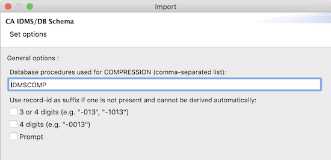

Importing a Diagram
You'll probably want to create diagrams for all or some of your existing IDMS schemas. Of course you do NOT have
to do this manually because the diagram editor plug-ins include an import feature that allows you to create a diagram
from either schema syntax or via a direct connection to a dictionary in one of your central versions; if
this isn't enough, you can also develop your own custom import functionality, but for that you need to have some
experience with Java and developing Eclipse plug-ins.
Note that although there is an automated way to create your diagrams, you will always have some work with making
the schema look nice and the way you want it to look.
Contents
Starting the Import Wizard
You can create a diagram for an existing CA IDMS/DB schema via a dedicated import wizard. This wizard can be selected
on the import wizard selection dialog, which is accessed via the File/Import menu item :
Select the import wizard in the import wizard selection dialog :
The first thing you need to do in the import wizard is to select the data source. There will be at
least 2 available data sources :
![[import wizard data source selection]](../../images/import_wizard_data_source_selection.png)
If you have developed (and installed) 1 or more custom import tools, they will show up in the above list as well. Press
the "Select" button before going to the next wizard page. Select the parent folder and name of the file that will hold
the diagram; the file extension MUST be ".schema" or ".schemadsl" (see file
extensions) :
Once you have selected the target file for the diagram, the next wizard pages vary depending on the
data source selected. Each standard import tool is described hereunder. The final page is
ALWAYS the 'record layout manager selection page'; on that page you specify how the records in the
diagram should be placed initially :
![[import layout manager selection]](../../images/import_layout_manager_selection.png)
Note that 2 dedicated record layout managers are available, 1 for the EMPSCHM version 100 schema and
1 for IDMSNTWK version 1 (none of these will be listed for any other schema).
The standard record layout manager places all records adjacent to each other and will produce an
equal number of rows and columns.
The grid record layout manager allows you to provide a properties file that contains the location of
each record :
COVERAGE=D3
DENTAL-CLAIM=E5
DEPARTMENT=A2
EMPLOYEE=C3
EMPOSITION=C1
EXPERTISE=C5
HOSPITAL-CLAIM=E3
INSURANCE-PLAN=D5
JOB=B1
NON-HOSP-CLAIM=E1
OFFICE=A4
SKILL=B5
STRUCTURE=D1
Play around with both of these layout managers and see which one you prefer to work with when importing your schemas to
create diagrams.
Importing from Schema Syntax
When importing a diagram from schema syntax, you need to select the file containing the schema
syntax :
Make sure the schema syntax is the output from a PUNCH SCHEMA NAME IS schema-name VERSION IS version-number AS SYNTAX statement.
Enter the names of the database procedures you use for database compression; this will allow for setting all
record's storage modes correctly :

You also can help the import tool in determining the correct base record- and record synonym names if there is a
relation with their record ids. Note that there is only 1 method to have these 100% correct : import your schema
diagrams directly from your dictionaries...
Importing from a Dictionary
Although it is fairly easy to import diagrams from schema syntax, it is much more efficient and precise to import
diagrams directly from an IDMS application dictionary. In order to be able to import schema diagrams from a
dictionary however, you must have installed the IDMS JDBC driver and have
defined at least 1 dictionary.
When importing from a dictionary on your mainframe, you will first need to select the
dictionary that contains the schema :
[TODO provide screenshot of the dictionary selection wizard page]
Then select the schema of interest in the list that was built when accessing your mainframe dictionary :
[TODO provide screenshot of the schema selection wizard page]
Finally, and only when you're importing the IDMSNTWK schema, you will be presented the
option of also importing the catalog tables :
[TODO provide screenshot of the options wizard page]
You are free to create your own version of the IDMSNTWK diagram, but be informed that an
excellent example is provided,
saving you a lot of work.
Custom Import Tools
You can create your own diagram import tools via the org.lh.dmlj.schema.editor.core.import extension point. The
custom import tools you create will show up in the list of data sources on the first
import wizard page (see above).
Describing in detail how to build your own custom import tool (data source) is beyond the scope of this help document.
You can take the "an IDMS dictionary on your mainframe" data source, which is defined in the
"org.lh.dmlj.schema.editor.dictionary.tools" plug-in project, as an example. See the diagram editor's source code
repository on GitHub.